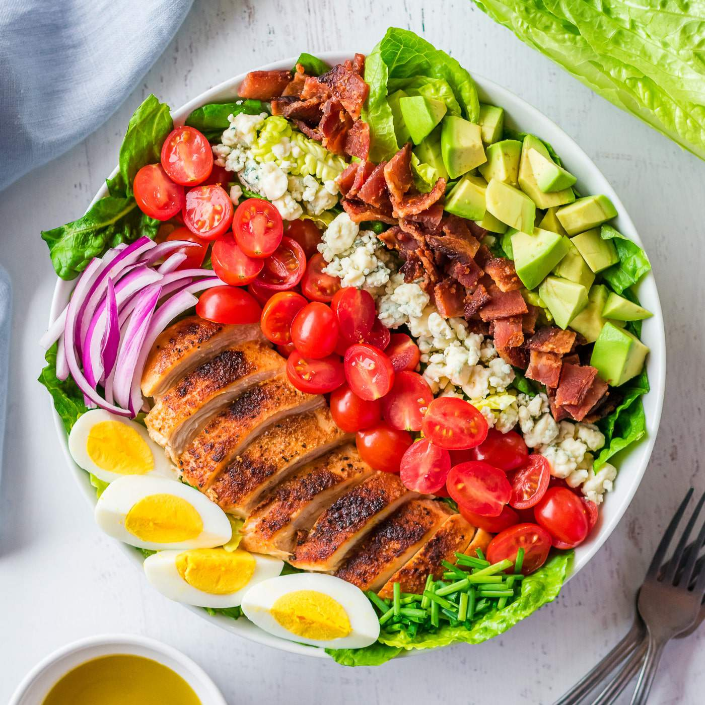

Salad cobb
Selada Cobb adalah sebuah hidangan utama selada taman Amerika yang
biasanya terbuat dari selada hijau, tomat, bakon, dada ayam, telur
rebus, alpukat, lokio, keju Roquefort, dan vinaigrette wine merah.
Apakah salad cobb sehat? Ya! Ini rendah karbohidrat, bebas gluten,
dan memiliki cukup banyak nutrisi dari semua bahan yang berbeda,
ditambah banyak protein dan lemak sehat.